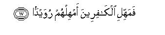

بسم الله الرحمن الرحيم
Sayyid Abul Ala Maududi - Tafhim al-Qur'an - The Meaning of the Qur'an
 86.
Surah Al Tariq (The Morning Star)
86.
Surah Al Tariq (The Morning Star)
The Surah taken its name from the word at-tariq in its first verse.
The style of its subject matter resembles that of the earliest Surahs revealed at Makkah, but this surah was sent down at a stage when the disbelievers of Makkah were employing all sorts of devices and plans to defeat and frustrate the message of the Qur'an and Muhammad (upon whom be Allah's peace and blessings).
It discuses two themes: first that man has to appear before God after death; second, that the Qur'an is a decisive Word which no plan or device of the disbelievers can defeat or frustrate.
First of all, the stars of the heavens have been cited as an evidence that there is nothing in the universe which may continue to exist and survive without guardian over it. Then man has been asked to consider his own self as to how he has been brought into existence from a mere sperm drop and shaped into a living human being. Then it has been said that the God, Who has so brought him into existence, has certainly the power to create him once again, and this resurrection will be for the purpose to subject to scrutiny all the secrets of man which remained hidden in the world. At that time, man will neither be able to escape the consequences of his deeds by his own power, nor will anyone else come to his rescue.
In conclusion, it has been pointed out that just as the falling of rain from the sky and the sprouting of plants and crops from the earth is no child's play but a serious task, so also the truths expressed in the Qur'an are no jest but a firm and unchangeable reality. The disbelievers are involved in the misunderstanding that their plans and devices will defeat the invitation of the Qur'an, but they do not know that Allah too is devising a plan which will bring to naught all their scheming and planning. Than in one sentence the discourse has been summed up, with a word of consolation to the Holy Prophet (upon whom be peace) and a tacit warning to the disbelievers, saying: "Have patience for a while: let the disbelievers do their worst. Before long they will themselves realize whether they have been able to defeat the Qur'an by their scheming or the Qur'an has dominated them in the very place where they are exerting their utmost to defeat it."

In the name of Allah, the Compassionate, the Merciful.


[1-17] By the heaven and the visitant by night, and what do you know what the visitant by night is? A shining star! There is no soul without a Guardian over it.1 Then let man at least consider from what he is created.2 He is created from a spurting fluid that issues forth from between the backbone and the breast-bones.3 Surely He (the Creator) has the power to create him again.4 The Day the hidden secrets are held to scrutiny,5 then man will neither have any power of his own nor any helper. By the heaven that sends down rain6 and by the earth that splits lat the sprouting of vegetation), it is a decisive Word. It is no jest.7 These people (i.e. the disbelievers of Makkah) are devising some plans,8 and I, too, am devising a plan.9 So leave the disbelievers, O Prophet; leave them to themselves for a while.10
1"A Guardian": Allah Almighty Himself, Who is looking after and watching over every creature, big or small, in the earth and heavens. He it is Who has brought everything into existence, Who is maintaining and sustaining everything in its place and position, and Who has taken the responsibility to provide for every creature and to protect it from calamities till an appointed tune. On this, an oath has been sworn by the heaven and by every star and planet which appears in the darkness of the night. (Although lexically, an-najm ath-thaqib is singular, it does not imply any one star but the star in the generic sense). The oath signifies that the existence of each of the countless stars and planets that shines in the sky at 'night, testifies to the fact that there is a Being Who has created it, illuminated it, suspended it in space, and thus is watching over it in a manner that neither it falls from its place nor collides with any other of the countless stars in their movements, nor does any other star collide with it.
2After making man ponder over the heavens, he is now being invited to consider his own self and see how he has been created, Who is it Who selects one spermatozoon from among billions of spermatozoa emitted by the father and combines it at some time with one ovum out of a large number of the ova produced by the mother, and thus causes a particular human being to be conceived? Then, Who is it Who after conception develops it gradually in the mother's womb Until it is delivered in the form of a living child? Then, Who is it Who in the mother's womb itself brings about a certain proportion and harmony between its bodily structure and its physical and mental capabilities? Then, Who is it Who watches over it continuously from birth till death-protects it from disease, accidents and calamities and provides him with countless means of life and opportunities for survival in the world of which he is not even conscious, not to speak of having the power to provide these for himself. Is all this happening without the planning and supervision of One God?
3"Sulb" is the backbone and "tara'ib"the breast- bones, i.e. the ribs. Since the procreative fluid in both man and woman is discharged from that part of the body which is between the back and the breast, it is said that man has been created from the fluid issuing out froth between the back and the breast. This fluid is produced even in case the hands and feet are cut off. Therefore, it is not correct to say that it issues out from the whole body of man. In fact, the principal organs of the body are its source and all these are located in the trunk. The brain has not been mentioned separately because the back-bone is that part of the brain through which connection between the body and the brain is established. (Also see Appendix I).
4That is, His bringing man into existence and watching over him from the tithe conception takes place until death, is a clear proof that He can create him once again after death. If He had the power to create him in the first instance and man stays alive in the world by His power alone, what rational arguments can be presented for the conjecture that He does not have the power to do the same thing a second time? To deny this power man will even have to deny that God has brought him into existence, and the one who denies this may well come out one day with the claim that all books in the world have been printed accidentally, all cities of the world have been built accidentally, and there has occurred on the earth an explosion by chance which made all the factories start functioning automatically. The fact is that the creation of man, the structure of his body, the existence of the powers and capabilities working within him, and his survival as a living being û all this is a much more complex process than all those works that have come to be accomplished through man, or are still in the process of being accomplished. If such a complex work with such wisdom, proportion and order could be accomplished just through a chance accident, what else could not be regarded as accidental by a mentally deranged person?
5"The hidden secrets": the acts of every person which remained a secret to the world as well as those affairs which came before the world only in their apparent form, but the intentions, aims and secret motives working behind them remained hidden from the people. On the Resurrection Day all this will be laid bare and not only will the acts and deeds of every person be examined but it will also be seen what was his motive and intention and object of so acting. Likewise, it also remained hidden from the world, even from the doer of the act himself, what effects and influences of his act appeared in the world, to what extent they spread and for how long they continued to work. This secret too will be revealed on the Resurrection Day and it will be fully examined as to what were the consequences of the seed that a person sowed in the world, what fruit it bore and for how long it affected the later generations for better or far worse.
6The words dhat ar-raj`e have been used for the sky. Literally raj`e means to return, but metaphorically this word is used for the rain in Arabic, for rain does not fall just once, but returns over and over again in the season and of season as well. Another reason for calling the rain raj `e is that vapor from the oceans of the earth and then falls back as rain on the sometimes out water rises as the same earth.
7That is, just as the falling of rain froth the sky and the splitting of the earth to put out shoots is no jest but a serious reality, so also the news which the Qur'an gives that man has to return to his God is no jest but a definite and decisive reality and an unchangeable truth which has to be fulfilled.
8That is, these disbelievers are devising every kind of plan to defeat the invitation of the Qur'an; they wish to blow out this candle; they are creating all sorts of doubts In the people's minds: they are inventing false accusations against the Prophet who has brought it, so as to frustrate his mission in the world and perpetuate the darkness of ignorance and unbelief which hr is struggling so hard to remove.
9That is, "I am planning that none of their devices should succeed so that they are utterly defeated in their designs, and the light which they are trying their utmost to put out, spreads far and wide.
10That is, "Leave them for a while to have their will. Before long the result will be before them and they will realize how far their scheming has become successful against My plan.”